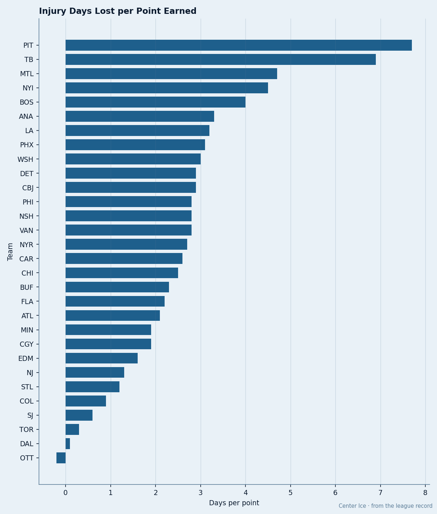

PIT
PIT TB
TB7.7 Man-Days Per Point: The Injury Absorption Rate Nobody Tracks
Pittsburgh and Toronto get hit the same number of times. One club loses weeks. The other loses a practice.
 Doug ReimerAnalytics editor, ex-video coach · The Slot Report
Doug ReimerAnalytics editor, ex-video coach · The Slot Report
Pittsburgh loses 7.7 man-days to the injury list for every point on its league table. Dallas loses 0.1. The ratio is 77 to 1, and it runs the wrong way for the club that needs production most.
The method is simple. Total days lost to designated injuries, divided by total points earned. The result is a measure of how efficiently a club absorbs the damage it takes. Volume tells you how often a room gets hit. Severity tells you how long each hit keeps a man out. The absorption rate combines both against the only output the standings track.

Pittsburgh sits at the top of the list for the second time this season. Duration is the driver. Toronto has 46 injury spells, more than Pittsburgh's 35, so volume isn't the story. The average Pittsburgh injury costs 11.4 days. The average Toronto injury costs 0.5 days. A Pens player who goes to the trainer comes back in under two weeks. A Leaf who goes to the trainer comes back in time for the next morning skate.
The Long List
The 20 longest injuries in the league tell you who is absorbing the damage. Tampa carries 4 of them. A leg to a defenseman at 85 days. A wrist to a veteran winger at 80. Another wrist at 58. A concussion at 56. Pittsburgh owns 2 of the top 10: a back at 70 days and a hip at 65. Montreal carries 3 in the top 10.
Tampa's problem is severity in a way Pittsburgh's is not. The Lightning's average spell is 15.4 days, the longest in hockey. They have 30 spells and 462 days lost. The absorption rate lands at 6.9, second only to Pittsburgh. Tampa's 67 points represent the best production in the Eastern Conference that isn't Toronto, and the cost per point is still punishing.
The Clubs That Absorb
| Club | Spells | Days Lost | Points | Days/Point | Avg Days/Spell |
|---|---|---|---|---|---|
 Dallas Stars Dallas Stars | 27 | 10 | 68 | 0.1 | 0.4 |
 Toronto Maple Leafs Toronto Maple Leafs | 46 | 24 | 85 | 0.3 | 0.5 |
 San Jose Sharks San Jose Sharks | 27 | 29 | 50 | 0.6 | 1.1 |
 Colorado Avalanche Colorado Avalanche | 23 | 61 | 65 | 0.9 | 2.7 |
 St. Louis Blues St. Louis Blues | 19 | 51 | 44 | 1.2 | 2.7 |
 New Jersey Devils New Jersey Devils | 27 | 87 | 68 | 1.3 | 3.2 |
Dallas carries 27 spells, the same as San Jose, and loses 10 total days. The average Dallas injury is gone before the trainer finishes filling out the form. Toronto's 46 spells produce 24 days lost, an average of 0.5 per spell. These clubs are getting hit constantly and losing nothing.
The mechanism is visible in the Toronto case. Forty-six spells across a 53-game season means the Leafs are losing a man for some part of every game. But none of them is long enough to disrupt a line combination or a defensive pairing. The room adapts because the adaptation costs almost nothing.
 Mario Lemieux85 has gone to the list 5 times this season. The ribs spell in late January cost him the most. The pattern of five separate visits to the trainer by a 39-year-old is itself the finding. At Pittsburgh, where the average spell is 11.4 days, five visits compounds in a way that does not happen at Toronto where the average is 0.5.
Mario Lemieux85 has gone to the list 5 times this season. The ribs spell in late January cost him the most. The pattern of five separate visits to the trainer by a 39-year-old is itself the finding. At Pittsburgh, where the average spell is 11.4 days, five visits compounds in a way that does not happen at Toronto where the average is 0.5.
What This Predicts
The clubs at the bottom of the absorption rate (0.1 to 1.3) are not the clubs with the fewest injuries. Dallas has 27 spells, more than Pittsburgh has spells per week. San Jose has 27. New Jersey has 27. These clubs get hit at the league average rate and lose almost nothing because the hits are shallow.
The clubs at the top are losing men who matter for weeks at a stretch. Pittsburgh's 52 points on 400 days lost means every man on the roster is carrying more minutes than his body was designed to carry, and the next spell compounds the one before it. Tampa's 462 days lost against 67 points is the most expensive production in hockey, and the Lightning are still 4th in the East.
Detroit, Colorado and New Jersey sit at 2.9, 0.9 and 1.3. These three clubs are producing at a top-10 pace while absorbing injuries at rates that should not be possible for clubs playing this many playoff-push games. The question for every other contender is whether their roster depth is real or whether the next 30 days will show it.